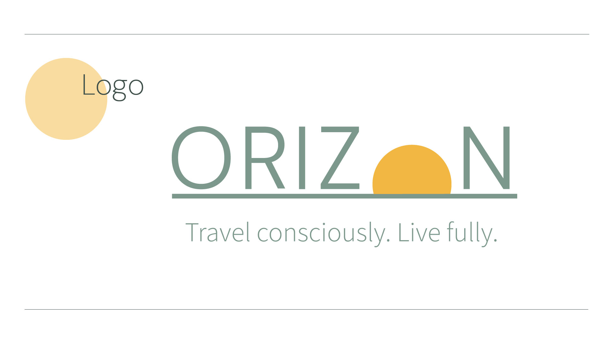

ORIZON
GRAFICA
Progettazione di identità visiva, logotipo e coordinato social per un'agenzia di viaggi etica, sostenibile e orientata al turismo rigenerativo.

PANORAMICA
IL PROBLEMA
Molte persone non si rendono conto dell'impatto profondo che i loro spostamenti e le loro vacanze possono generare sulle comunità locali e sugli ecosistemi. Nelle destinazioni a forte vocazione turistica, un turismo di massa non regolamentato rischia di causare più danni che benefici, depauperando il territorio e riducendo l'esperienza di viaggio a una mera fruizione superficiale. Spesso manca un'alternativa concreta che permetta di esplorare il mondo rispettando la natura e valorizzando l'autenticità dei contesti locali.
LA SOLUZIONE
La creazione dell'identità visiva completa per Orizon, un'agenzia di viaggi fondata da professionisti con vent'anni di esperienza nel settore. Il progetto traduce in elementi di grafica coordinata — dal logotipo alle palette cromatiche, fino ai set di icone e ai post per i social media — la filosofia del turismo rigenerativo. L'obiettivo visivo e strategico è comunicare fin dal primo impatto un viaggio consapevole, basato sul principio guida: "leave nothing but footprints, take nothing but memories" ("non lasciare altro che impronte, non prendere altro che ricordi").
Vuoi consultare la presentazione completa?
Scarica il PDF della presentazione di Orizon con l'analisi del logotipo, la palette colori, la scelta tipografica e i layout social.